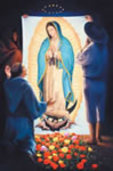
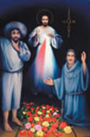
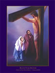
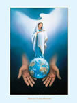

Behold Your Mother is an organization "Dedicated to proclaiming Christ's mercy through the most Blessed Virgin Mary".
The purpose of this foundation is to:
Our goal is to provide and distribute religious images for meditation and edification. We currently offer 3 posters, The first one contains both paintings in "Our Lady of Guadalupe Set".
| Our Lady of Guadalupe Set | |||
|  |  |  |  |
| Madonna - B | Jesus | Behold Your Mother | Queen of Heaven |
Charles H. Pabst, Artist
March 25, 1999
Feast of the Annunciation